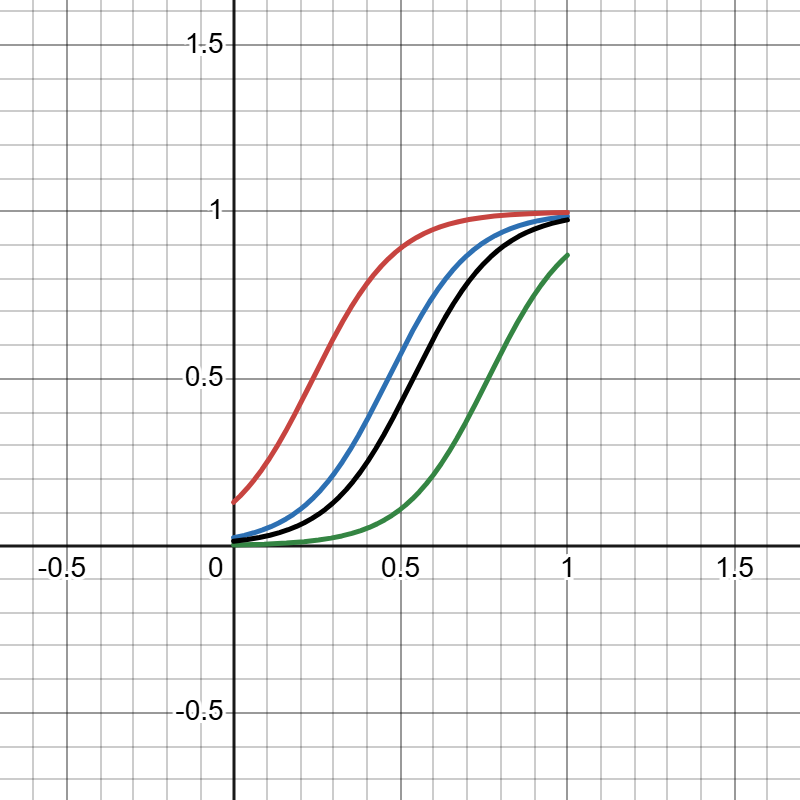
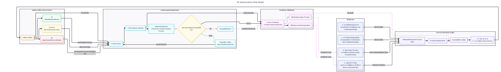
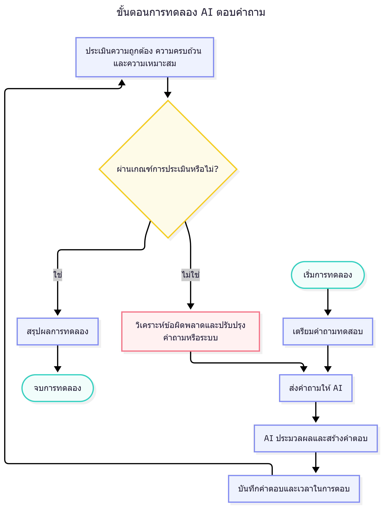

AI Hallucination คืออะไร
ปรากฏการณ์ที่แบบจำลองปัญญาประดิษฐ์เชิงรู้สร้าง (Generative AI) สร้างเนื้อหาที่ดูมีความสมเหตุสมผลในเชิงภาษา แต่ไม่ถูกต้องตามข้อเท็จจริง ไม่สอดคล้องกับแหล่งข้อมูลอ้างอิง หรือเป็นข้อมูลที่ไม่มีอยู่จริง เกิดขึ้นได้แม้ในแบบจำลองที่มีประสิทธิภาพสูง เพราะกลไกการทำงานคือการทำนายลำดับคำที่มีความน่าจะเป็นสูงสุด มิใช่การตรวจสอบความจริงจากฐานความรู้ที่ตายตัว
◎ CORRECT INFORMATION
✕ HALLUCINATED INFORMATION
ปัจจัยความเสี่ยงทั้งสี่
แบบจำลองกำหนดตัวแปรหลัก 4 ตัว โดยทุกตัวแปรอยู่ในช่วง [0, 1] — คลิกที่การ์ดเพื่อดูผลกระทบต่อ H
Mathematical Model
เนื่องจากค่าความเสี่ยง H ต้องอยู่ในช่วง [0, 1] แบบจำลองนี้เลือกใช้ฟังก์ชันโลจิสติก (Logistic Function) ซึ่งให้ผลลัพธ์อยู่ใน (0, 1) เสมอ มีรูปทรง Sigmoid และสามารถรวมตัวแปรหลายตัวผ่านตัวแปรกลาง Z ได้
| สัมประสิทธิ์ | ความหมาย | ทิศทาง |
|---|---|---|
| a | น้ำหนักผลกระทบของความไม่แน่นอนของข้อมูล U | บวก (+) |
| b | น้ำหนักผลกระทบของความซับซ้อนของคำถาม C | บวก (+) |
| c | น้ำหนักผลกระทบของคุณภาพ Prompt P | ลบ (−) |
| d | น้ำหนักผลกระทบของบริบท B | ลบ (−) |
| k | ค่าคงที่ปรับฐาน (Baseline Constant) — เลื่อนตำแหน่งเส้นโค้งบนแกน Z | คงที่ |
ทดลองปรับค่าตัวแปรด้วยตนเอง
Logistic Risk Curve
แกน X แทนค่า U (Data Uncertainty) และแกน Y แทนค่า H (Hallucination Risk) — เส้นโค้งทั้ง 4 เส้นคือ 4 สถานการณ์ ที่ตรึงค่า C, P, B คงที่ต่างกัน วางเมาส์บนกราฟหรือรายการด้านขวาเพื่อไฮไลต์แต่ละกรณี

สี่สถานการณ์เชิงแนวคิด
คลิกที่การ์ดแต่ละใบเพื่อดูสมการ Z และ H ที่ได้จากการแทนค่า C, P, B ตามรายงาน
ต่ำ + คุณภาพ Prompt สูง + บริบทเพียงพอ
สูง + คุณภาพ Prompt สูง + บริบทเพียงพอ
ต่ำ + คุณภาพ Prompt ต่ำ + บริบทไม่เพียงพอ
สูง + คุณภาพ Prompt ต่ำ + บริบทไม่เพียงพอ
ระดับความเสี่ยง
เกณฑ์เชิงแนวคิดสำหรับตีความค่า H ที่ได้จากแบบจำลอง
ทำไม Hallucination จึงเป็น Multi-Factor
ไม่มีปัจจัยใดเพียงตัวเดียวที่กำหนดความเสี่ยง — ตำแหน่งของเส้นโค้งแต่ละเส้นคือผลรวมของอิทธิพลจาก U, C, P, B พร้อมกัน

Mathematical Insight
พฤติกรรมของฟังก์ชันโลจิสติกที่ Z มีค่าต่าง ๆ และอัตราการเปลี่ยนแปลงของความเสี่ยงเทียบกับ Z
Z มีค่าต่ำมาก → ความเสี่ยงเข้าใกล้ศูนย์
Z ใกล้ 0 → จุดกึ่งกลาง ความชันสูงสุด
Z มีค่าสูงมาก → ความเสี่ยงเข้าใกล้ค่าสูงสุด
Self-Verification & Feedback Loop
แนวคิดเชิงวิศวกรรมสำหรับลดความเสี่ยง Hallucination ด้วยการให้ AI ตรวจสอบคำตอบของตนเองก่อนส่งผลลัพธ์สุดท้าย อ้างอิงจากขั้นตอนการทดลองและแผนภาพประกอบรายงาน
Initial Prompt
เตรียมคำถามทดสอบและส่งคำถามให้ AI ประมวลผลและสร้างคำตอบเบื้องต้น (Draft Answer)
Self-Critique & Fact-Check
ป้อน Prompt พิเศษให้ AI ตรวจสอบคำตอบของตัวเอง เทียบเคียงกับบริบทแหล่งอ้างอิงและข้อกำหนดของ Prompt
Revision
หากผลตรวจสอบไม่ผ่านเกณฑ์ AI จะแก้ไขคำตอบหรือระบุขอบเขตความเสี่ยงที่ยังคงเหลืออยู่ แล้ววนกลับไปตรวจซ้ำ
Final Output Validation
เมื่อผ่านเกณฑ์ประเมินแล้ว จึงบันทึกคำตอบสุดท้ายและรวบรวม Feedback เพื่อปรับปรุงคุณภาพ Prompt และบริบทในรอบถัดไป

ข้อจำกัดของแบบจำลอง
สรุป
ผลจากการวิเคราะห์กราฟทั้ง 4 กรณีแสดงให้เห็นอย่างชัดเจนว่าความเสี่ยงของ Hallucination มิได้ถูกกำหนดโดยปัจจัยใดปัจจัยหนึ่งเพียงลำพัง หากแต่เป็นผลรวมของปัจจัยหลายด้านที่ทำงานร่วมกันอย่างซับซ้อน ในเชิงคณิตศาสตร์ คุณสมบัติของฟังก์ชันโลจิสติกและอนุพันธ์ของมัน ช่วยอธิบายว่าความเสี่ยงจะไวต่อการเปลี่ยนแปลงมากที่สุดในช่วงความเสี่ยงระดับปานกลาง ซึ่งมีนัยสำคัญเชิงแนวคิดต่อการออกแบบมาตรการลดความเสี่ยง เช่น การพัฒนาคุณภาพของ Prompt หรือการเพิ่มบริบทที่เกี่ยวข้อง แบบจำลองนี้เป็นเครื่องมือเชิงแนวคิดเพื่อสนับสนุนความเข้าใจเท่านั้น มิใช่มาตรวัดทางวิทยาศาสตร์ที่ผ่านการพิสูจน์หรือรับรองจากการทดลองจริง
ไฟล์และภาพต้นฉบับของโครงงาน
ภาพประกอบและเอกสารทั้งหมดที่ใช้เป็นแหล่งข้อมูลหลักของโครงงานนี้ คลิกเพื่อเปิดดูฉบับเต็ม
About the Researcher
Faculty of Engineering
University of the Thai Chamber of Commerce